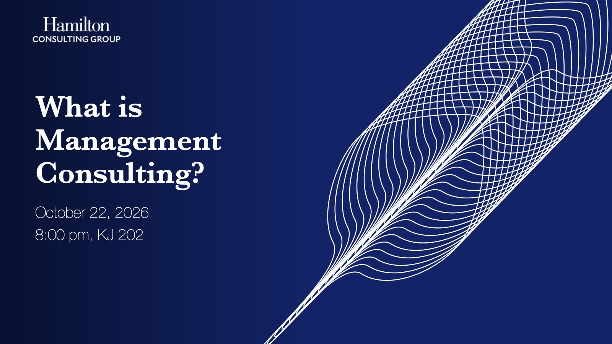
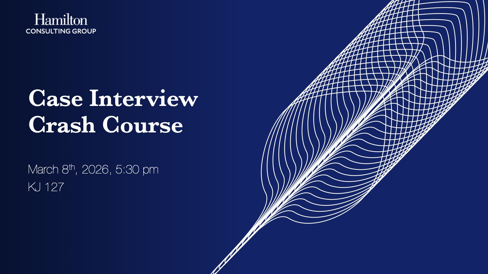

October 22, 2026 · 8:00 pm · KJ 202
What Is Management Consulting?
Engagements, careers, lifestyle, firm tiers, why Hamilton students fit, and how to break in.

1 / 23
Prepare
Start with what the job is, then work through the recruiting calendar and case interviews at your own pace. HCG’s office hours and case materials are there when you want help.
The profession
Organizations hire consultants to work through a hard question under uncertainty: why margins are falling, whether to enter a market, how to reorganize. Consultants structure the problem, analyze the options, and recommend a path. The client makes the call.
Common kinds of engagements
About 6–12 weeks
Market entry, growth strategy, portfolio decisions.
About 3–9 months
Cost reduction, pricing, supply chain, margin improvement.
About 12–24 months
Organization redesign, digital overhauls, turnarounds.
Before a deal
Commercial, operational, and financial analysis before an investment.
From HCG’s What Is Management Consulting? session, March 2026.
Recruiting timeline
Most consulting recruiting happens a year before the job starts. Here is the rhythm HCG walks members through. Always confirm each firm’s deadlines on its own site.
Case interviews
A case interview is a business problem you solve out loud with the interviewer. It tests how you structure a question, use evidence, do the math, and land on an answer.
Define the problem and what success looks like.
Break it into parts and form a first hypothesis.
Turn data and exhibits into insights; update the hypothesis.
Brainstorm solutions and test whether they are feasible.
Give the answer first, with risks and next steps.
A practice plan
Behavioral questions
Prepare short examples of leadership, problem solving, teamwork, setbacks, and judgment. For each: the situation, what you did, the result, and what you learned.
Presentations
October 22, 2026 · 8:00 pm · KJ 202
Engagements, careers, lifestyle, firm tiers, why Hamilton students fit, and how to break in.

March 8, 2026
Structured problem solving, the interview flow, exhibits, and the math, through the Royal Cinemas practice case.

Get help from HCG
Choose what you need. The request form opens with your topic already picked, and HCG replies by email.
Resources
Past HCG presentations and the best outside prep tools are on the Resources page.